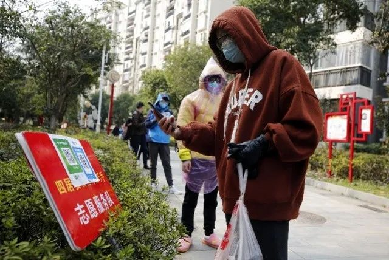
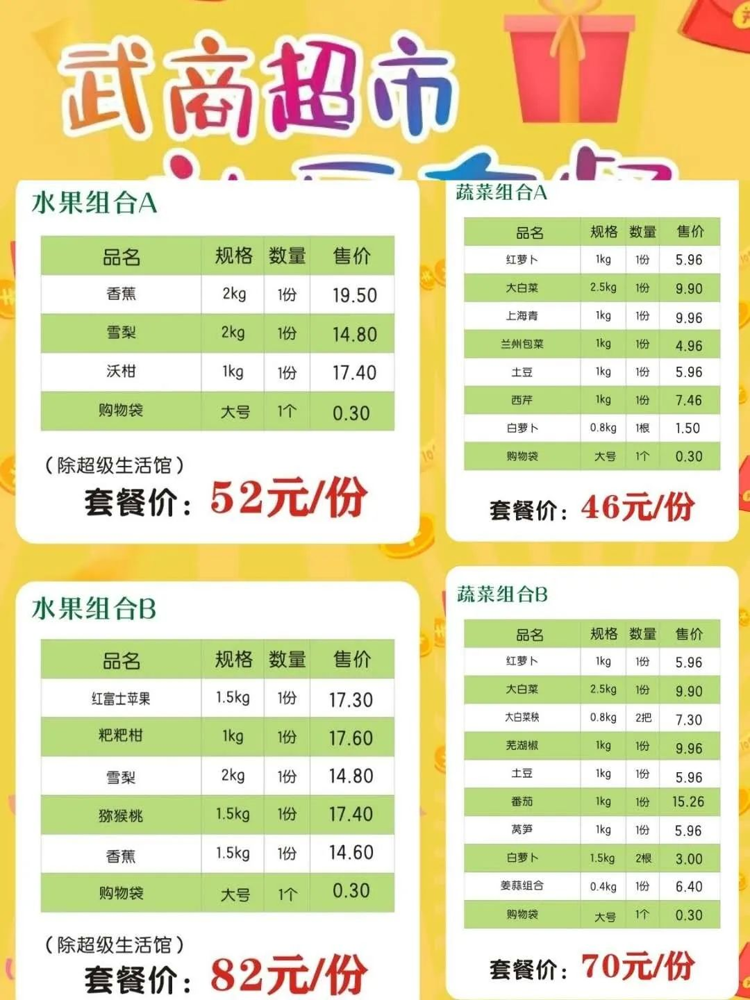
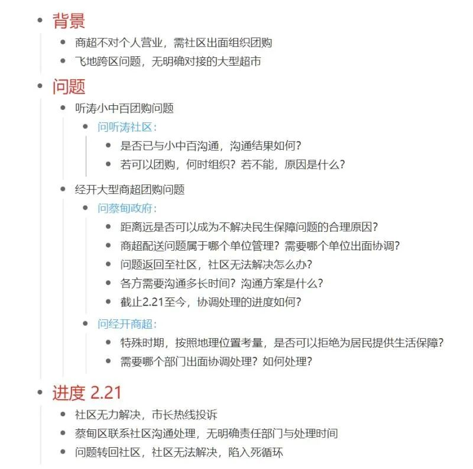
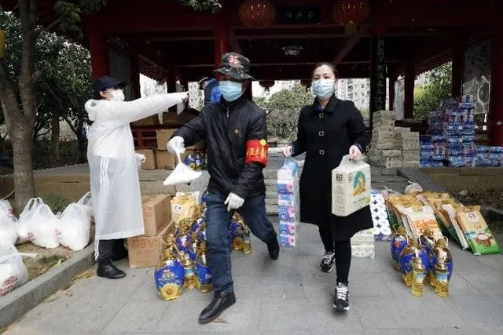

在人间丨“拯救世界”的武汉普通人
原文链接 备份链接 凤凰新闻客户端 凤凰网在人间工作室出品 口述：思雨（医院工作人员） 坐标：武汉市硚口区 我是95后，父亲是医生，当初我也想要学医，被父亲否定。他觉得当医生太辛苦了，不适合女生。但我最终还是在2019年7月，成为了武汉一 …

他们理解小区被封，理解只能选择被塞了四大包汤圆的团购套餐，理解菜价成倍上涨，理解要继续忍受生活上的不便，才有可能早一点等来结束的一天。
文 | 谢婵 编辑 | 小豆
武汉伢王嘉兴给父母打电话，得知小区业主群里推荐的100元的蔬菜套餐，平日里只需70元。他挂了电话一算，几乎涨了50％。“武汉嫂子汉骂”视频火了后，他在手机上查了武汉某超市公布的菜价：西红柿8.5元/斤，肉涨到了40–50元/斤……
这个年轻人在自己的社交账号上记录这些生活的琐碎，“我只能安慰自己，我们终于不再被每天生生死死的微博淹没，可以开始关注吃饭的问题了。”
对于被困住的千万武汉人来说，几乎所有人都理解特殊时期的特殊性。
他们理解小区被封，理解只能选择被塞了四大包汤圆的团购套餐，理解菜价成倍上涨，理解要继续忍受生活上的不便，才有可能早一点等来结束的一天。

定闹钟也抢不到配送名额
程维每天都定闹钟，但从没抢到过盒马鲜生的配送名额。他说，商品列表的消失速度就像俄罗斯方块来了一根竖条那么快。白鹏则把抢盒马鲜生配送类比为:和SNKRS(耐克官方APP)上抢一双AJ差不多，天天陪跑。
封城后，交通管制和小区封锁政策接踵而至。线上买菜成为主要渠道。
2月11日，苏樟妈妈的小区群开始流行微信群接龙团购。他们加了一堆微信群，有些是按照商超品牌区别，有些是按照购物种类区分。小区物业告诉他们，现在大大小小的团购群有30个，几乎都是由商家自己建立的。
小区物业曾经给苏樟妈妈推荐过一个买菜小程序。小程序买肉得1000元起送，但苏樟年前受疫情影响没敢回家，家里就两个人，根本吃不了那么多肉。
苏樟研究了一番，才弄明白如何通过线上购菜渠道下单。她远程下单，父母再全副武装去指定地点取菜。她有时候也想：“家里如果只有老人，真不知道该怎么买菜。”
帮爸妈线上买菜的年轻人：
加100元红包才有人送
刘逸17号那天通过饿了么骑手给父母买了一次菜。那是朋友教她的方法，朋友嘱咐，给骑手发200元红包，会有人接单的。
他们家小区只有两栋楼，没几户人家在，在社区工作人员介入前，业主们自己怎么也凑不够团购起送需要达到的订单数量。
刘逸父母原本在日本陪她过年，签证没法续签，于是父母2月17号跟随大使馆包机回到武汉。回来那天老人出去买菜，刚到小区门口就被拦下。刘逸也慌了，上微博一看，才知道武汉所有住宅小区已经实行封闭管理。
他们赶上了最严厉的管控时期：此前每户人家每三天可以派一人出门买菜的政策失效，出入证也作废。
但刘逸觉得自己运气还算好。那一次买菜，她只填了100元调度费就有骑手接单。她选了一些存放时间比较长的菜，按四五斤为单位买，希望买到的菜能支撑多一些日子。
“不是完全买不到，只是开销太大了。”她明显感觉到，这一单比平时贵多了，不算跑腿费，花了将近500元。“特殊时期，没办法。”

刘逸500元的买菜订单。
商超不再对接个人，只能购买套餐
2月18日起，武昌区和青山区相继宣布辖区内所有的商超只接受团购客户，不再对个人销售生活物资。
多家超市接连推出了团购套餐。苏樟小区常用的家乐福光谷店套餐，一般家庭需求较大是蔬菜和肉类。蔬菜套餐内共11种蔬菜，售价99元。冷冻肉套餐由2.5kg后腿肉、2.5kg肋排、2kg五花肉组成，售价349元。
购菜微信群里，有居民吐槽100元买来的蔬菜套餐，平时只需30元。某个套餐里的汤圆袋数每天都在增加——从一开始的两包到后来的四包，“又不是大户人家过元宵节，哪能吃的了那么多。”

武汉各政务微信公众号先后给居民推荐了线上生鲜平台。据“招商武汉”统计，截至2月24日，武汉市提供线上买菜服务的电商平台已增至33家。各平台对下单时间、配送时限、配送范围有不同的要求。大多数平台对团购数量有要求，或需要固定“团长”对接。
身处武汉的秦楚客在个人微信公众号上记录了在这些线上渠道买菜的经历，他至少试了其中九个APP，没有买到菜的原因千奇百怪：
食享会APP上没有所在社区联系人，无法购买；中百仓储的多点APP页面显示“便捷生活，敬请期待”；吉及鲜、盒马鲜生、十荟团都不在配送范围内；美家预约了三次都没有成功……
22号晚上，一段“武汉嫂子汉骂”视频突然在网上火起来：一位业主在社区群里抨击不作为的社区与用套餐来捆绑销售的超市。陈维佳看了视频，忍不住想，这些住在武汉高端小区的业主都只能任由套餐摆布，那其他人呢？
武商超市（2月17日-2月20日的套餐价格）的蔬菜套餐分为两种，6种蔬菜组合（共7.5kg)58元/份，8种蔬菜组合（共9.5kg)88元/份。肉蛋套餐里包含了5斤冻猪肉、30枚鸡蛋、一箱纯牛奶共162元。中百仓储只显示了一个蔬菜套餐组合作为范例，里面包含了7种蔬菜加一份葱姜蒜，售价为80元。
“武汉有很多城中村，或即将拆迁半拆迁的老破小区，每个小区也就一两个保安，他们管得过来吗。”
陈维佳觉得，身处疫区，每天看着确诊人数上涨，这个阶段的武汉人，“真的又憋闷，又有强烈的危机感，再来个高价团购，心里别说多委屈了。”
以前，陈维佳觉得家住武汉的母亲情况尚好，每月有退休金领，但周围的邻居就不一定了。“武汉有些老人特别省钱，我家邻居每次去超市就买一块钱一袋的泡面吃。”有邻居每天跟孙维妈妈抱怨，现在不能出去赚钱，没钱用了怎么办。陈妈妈只能安慰对方，现在是艰难时期，大家都忍一忍。
“武汉嫂子汉骂”视频火了之后，武商量贩和中百仓储先后于24日和25日更新了套餐。对比前后两档套餐，各类套餐价格有所下降，且单种菜品的价格明细也被标识。


中百超市提供的套餐

武商超市提供的套餐
据湖北日报25日报道，武汉五大商超目前都推出了10斤10元特价蔬菜包，表示会重点保障辖区低收入群体购买。但尚无针对“低收入人群”标准的具体解释。
丧失稳定买菜渠道的边缘社区

听涛社区居民多次到城市留言板留言。
与社区沟通、一遍遍拨打市长热线、去城市留言板上留言……武汉女孩张宜修和朋友们尝试了所有能想到的方法来解决买菜问题。他们社区已经没有稳定的买菜渠道。
社区居民戏称自己住在“飞地”。张宜修的小区位于武汉经济开发区(以下简称经开区)枫树一路，地理位置属经开区，周围的社区都属于经开区管理，唯独她所在的听涛社区属于蔡甸区，事实上，他们与蔡甸城区相隔22公里。
封城以来，张宜修眼看着买菜的大门一扇一扇关上。
先是小区门口的中百超市因为食品经营许可证没有到店被迫关门，那里原本是整个社区几千居民的购物保障。
个体商店的老板18号也因为道路交通进一步管制，在微信群里告知大家，以后都进不到菜和水果了。
张宜修一个一个试网上推荐的6个线上购买平台，其中5个配送范围不包括他们社区。只有一个食享会APP，居民开了团，位置偏远，一两天后就停了。

张宜修和朋友们试图解决问题的工作日记
很多业主希望，他们能有正规固定的商超与社区对接。业主群里时不时有私人老板卖菜，张宜修说，涨价问题完全靠卖家良心，甚至有人经常在群里发几月几号店铺要关门的消息，来煽动大家抓紧储备物资。
在持续协商过程中，她们于21号等来了唯一以社区名义组织的团购：一份价格为55元的蔬菜包。
社区：4个工作人员对2500户居民

2月24日，在武汉市百步亭社区龙庭小区，百步亭社区四居委会工作人员和志愿者为居民整理其订购的货品。（新华社发）
张宜修觉得社区的问题是一个死循环：她相信她跟社区反映的问题，社区肯定也往上反映过。她又和朋友们一遍遍拨打市长热线，但每次得到的回馈都是：会督促街道办或社区为他们解决。
压力最终回到只有4个工作人员的社区身上。社区书记表示，听涛社区现在住着2500多户，共7000多人。除了来帮忙的下沉干部，这个社区甚至没有网格员。其中一位网格员没有从外地回到武汉，另一位网格员则是刚生完孩子。
社区书记说，办公室的电话好像24小时都没停过。她和同事们已在社区住了一个多月，一直没回过家，晚上八点下班是常态。
每天一上班，住户们的要求就朝他们涌来。需要买药的家庭都会告诉她，如果今天没有这个药，后果会有多严重。关于粮食，居民们有各种各样的要求，“买到蔬菜的，他想吃肉；吃了肉的，他说要新鲜肉，不要冰冻肉；吃上新鲜肉的，他说我要吃鱼；吃了鱼的他说我要喝酒、我要吃薯片……”
有居民问她，能不能将蔬菜包里的蔬菜品种换一换。她彻底没招了，“本来现在季节都是吃这几种菜的，对不对？”
至于没有大型商超与社区对接，书记解释道，她们此前联系过离小区最近的一家武商超市，但涉及跨区问题，对方商超没法送货，自己社区又没有通行证，也不能出去。问题便迟迟无法解决。
到发稿前，张宜修和朋友们表示，他们目前收到了蔡甸区市场监督局的投诉反馈，对方告诉他们，从25日开始，小区门口的中百听涛观海店可以继续给社区供货，除了暂时没有肉，基本的米、面粮、油、青菜都有。
同日，社区工作人员也在业主群里发布了新的团购方式，表示已经和中百奓山店沟通好，可以像其他地区的居民一样正常团购。但测温、统计、发放蔬菜等工作量巨大，社区希望能招募到16名志愿者。

社区招募志愿者的微信截图
下沉干部眼里的买菜问题
1月27日起，付莎莎作为下沉干部驻扎白马洲社区。据2月23日统计，白马洲社区共有2098户，4200人。付莎莎说，自己在社区居民的买菜问题上花了大力气。
起初，她联系上熟悉的菜贩子，让对方拖菜到小区门口来卖。但居民们看见菜就涌上来。她觉得太危险，开始寻找网上能送货的店。
她一共找到了13家商店，挨个核查了商家的营业执照、健康证、检疫合格证等，她才放心地推荐给居民购买。
她还联系了小区内的两家超市的老板，让居民在微信群里下单，一个一个排好号，轮到谁就下楼取菜。

付莎莎在给社区居民送菜。（受访者供图）
商超宣布对接社区的新闻出来后，付莎莎联系了武商量贩的工作人员。对方发给她一个表格，她打开一看，里面全是套餐，没有什么选择的余地。甚至连调料都有专门的套餐。
“很多居民都比较节约，不愿意大手大脚的，我们年轻人不介意买个酱油还要搭着买这买那的，但有些年纪大的人就不愿意买那些套餐。”
那一次并没有与武商量贩对接成功，付莎莎说，还有一个原因是，套餐需要社区自己派车去取。但社区眼下一共只有两辆车，是用来给居民买药送药，或处理别的紧急情况的。社区用车也有明文规定，不能作为其他用途。
目前，武汉市民的买菜渠道主要依赖线上生鲜平台和社区组织的团购。除此之外，一些小区居民表示，家附近的便利店仍可通过微信群接龙订购，也有部分小区业主凭借自己的资源，联系熟悉的菜贩子不定期给小区业主送菜。“现在买菜不看价，抢到就行！”
( 除陈维佳、王嘉兴与付莎莎之外，其他人均为化名)
来源｜南都周刊
END
欢迎分享到朋友圈，如想取得授权请邮件：newmedia@nbweekly.com。如果想找到小南，可以在后台回复「小南」试试看哦~

原文链接 备份链接 凤凰新闻客户端 凤凰网在人间工作室出品 口述：思雨（医院工作人员） 坐标：武汉市硚口区 我是95后，父亲是医生，当初我也想要学医，被父亲否定。他觉得当医生太辛苦了，不适合女生。但我最终还是在2019年7月，成为了武汉一 …
原文链接 备份链接 一级批发商并没有太多涨价，大型超市的价格也相对稳定，但经过中间环节，居民最终支付的菜价上涨明显。共有33家电商平台可以提供生鲜外卖服务，一些社区团购的菜价高、质量参差不齐、购买不便，居民希望服务改进的呼声较高 文 |《 …
原文链接 备份链接 经历整整31天的艰难考验之后，武汉疫情防控已经从无序走向有序，但千万居民的生活从无序到有序才刚刚开始，这个疫情核心区的社会经济生活全面恢复，还面临很多挑战 2020年2月11日，武汉市洪山体育馆武昌方舱医院，社区工作人 …
原文链接 备份链接 *这篇不知道又触及什么内容，一直无法查看，自我阉割。 今天武汉大雪纷飞，北风乱吹，正儿八经的下雪，不是忽悠人的小雪粒，我不爱玩雪，看着只觉得冷，倒怀念昨天快20度的好天气。 早上还是雨珠，到中午就开始飘雪，鹅毛大雪，作 …
原文链接 备份链接 采访、撰文 | 吴楠 投稿邮箱 | gayspot_edit@163.com 马志远是2020年年初这一次来势汹汹的新冠肺炎疫情中的一名默默无闻的志愿者。虽然在远离疫区中心的地方，但他看着这个城市街头的人流量只有原来的 …